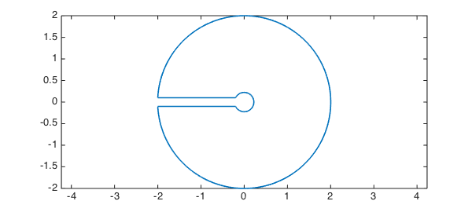
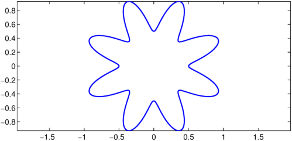
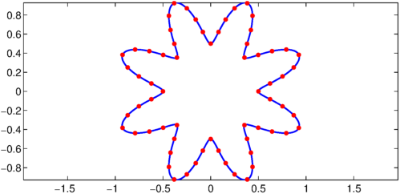
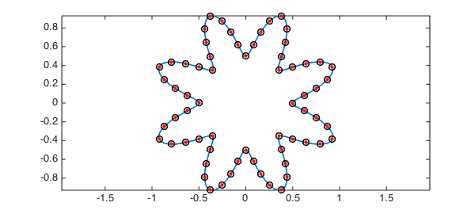

1. Arc length of a contour
Here is a contour discussed in the Example "A Keyhole Contour Integral" [1]:
r = 0.2; R = 2; e = 0.1;
t = chebfun('t',[0 1]); % parameter
c = [-R+e*1i -r+e*1i -r-e*1i -R-e*1i];
z = join( c(1) + t*(c(2)-c(1)), ... % top of the keyhole
c(2)*c(3).^t ./ c(2).^t, ... % inner circle
c(3) + t*(c(4)-c(3)), ... % bottom of the keyhole
c(4)*c(1).^t ./ c(4).^t); % outer circle
LW = 'LineWidth'; lw = 1.6;
plot(z,LW,lw), axis equal

The total length of the contour can be calculated with one command:
L = arcLength(z)
L = 17.179598985403512
If the length of each patch is what you want to know, then you can make the input a quasimatrix whose columns are the different pieces.
z = [ c(1) + t*(c(2)-c(1))... % Top of the keyhole
c(2)*c(3).^t ./ c(2).^t... % Inner circle
c(3) + t*(c(4)-c(3))... % Bottom of the keyhole
c(4)*c(1).^t ./ c(4).^t]; % Outer circle
L = arcLength(z)
L = Columns 1 through 3 1.800000000000000 1.197613431941939 1.800000000000000 Column 4 12.381985553461574
2. Equidistributing points along a contour
It is not uncommon that we need to discretize and sample over a 2D curve in the complex plane. For instance, we may want to uniformly distribute points along the boundary of a domain when the boundary integral method is used. That is, the points should be equally-spaced with respect to arc length. Consider the following star-shaped curve:
t = chebfun('t',[0 1]);
s = exp(1i*2*pi*t).*(0.5*sin(8*pi*t).^2+0.5);
plot(s,LW,lw), axis equal, hold on

First, we calculate the total arc length of this closed curve.
L = arcLength(s)
L = 9.634012138198038
Suppose, for example, that we want to equidistribute 64 points.
N = 64; h = L/N; T = zeros(1,N);
We could do this by solving 63 rootfinding problems:
tic
len = cumsum(abs(diff(s)));
for k = 1:N-1
T(k+1) = roots(len-k*h);
end
toc
Elapsed time is 5.621928 seconds.
Now that we have the coordinates of the points, and let's mark them on the curve.
P = s(T); MS = 'MarkerSize'; ms = 16; plot(P,'.r',MS,ms)

The rootfinding problems above, unfortunately, took quite a while, because the chebfun len is rather long:
length(len)
ans =
1918
A better approach is not to solve our own rootfinding problems but to first invert len with the Chebfun command inv:
tic, g = inv(len); toc
Elapsed time is 1.907941 seconds.
Here we put circles around the dots to confirm that we have the same result as before:
plot(s(g((0:N-1)*h)),'ok',MS,8)

References
- Chebfun Example complex/KeyholeContour